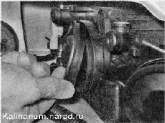
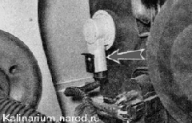

Замена ламп блок-фарыНельзя дотрагиваться до колб галогенных ламп пальцами. Работайте в чистых хлопчатобумажных перчатках без резинового напыления. Жирные следы от пальцев, оставшиеся на колбе лампы, в несколько раз сократят срок ее службы. После случайного касания пальцами колбы лампы, протрите колбу чистой салфеткой, смоченной спиртом. ЛАМПА ДАЛЬНЕГО СВЕТА Последовательность выполнения 1. Подготавливаем автомобиль к выполнению работы . Выключаем наружное освещение. 2. Снимаем резиновую заглушку с секции дальнего света. 3. Снимаем колодку провода с вывода лампы. 4. Освобождаем фиксатор, выведя концы пружинного фиксатора из пазов.
6. Устанавливаем новую лампу в обратной последовательности ЛАМПА ГАБАРИТНОГО СВЕТА Последовательность выполнения 1. Снимаем резиновую заглушку с секции дальнего света (см. выше). Выключаем наружное освещение. 2. Н отсоединяя провода, вынимаем патpoн лампы габаритного света из отражателя. 3. Извлекаем неисправную лампу из патрона. 4. Вставляем новую лампу в патрон и устанавливаем патрон в отражатель. 5. Надеваем резиновую заглушку на блок-фару ЛАМПА БЛИЖНЕГО СВЕТА Доступ К лампам затруднен, поэтому часть операций придется выполнять на ощупь. Для облегчения доступа клевой блок-фаре можно снять корпус воздушного фильтра, а для доступа к правой блок-фаре - бачок стеклоомывателей Последовательность выполнения 1. Подготавливаем автомобиль к выполнению работы (см. «Подготовка автомобиля к техническому обслуживанию и ремонту»). Выключаем наружное освещение. 2. Снимаем резиновую заглушку с секции ближнего света.  3. Снимаем колодку провода с вывода лампы. 4. Освобождаем фиксатор, выведя концы пружинного фиксатора из пазов. 5. Извлекаем неисправную лампу. 6. Устанавливаем новую лампу в обратной последовательности. ЛАМПА УКАЗАТЕЛЯ ПОВОРОТА Последовательность выполнения 1. Подготавливаем автомобиль к выполнению работы (см. «Подготовка автомобиля к техническому обслуживанию и ремонту»). При замене правого указателя поворота снимаем бачок стеклоомывателей (см. «Бачок стеклоомывателей снятие и установка»). 2. Повернув против часовой стрелки патрон лампы указателя 
поворота, извлекаем патрон вместе с лампой из корпуса указателя. 3. Немного утапливаем в патрон неисправную лампу и, повернув против часовой стрелки, извлекаем ее из патрона.
4. Заменяем неисправную лампу. 5. Устанавливаем патрон с лампой в указатель и поворачиваем его по часовой стрелке до фиксации. |